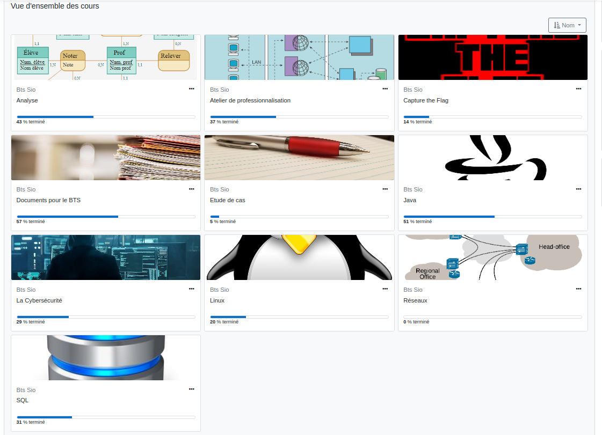

Conception et développement d’applications
Dans cette unité d'enseignement, nous avons eu des cours portant sur l'ensemble du parcours nous permettant
de concevoir de manière théorique puis pratique une application ou une plateforme web en partant de l'algorithmie de base en 1ère
année, en passant par l'analyse , avec Merise notamment et la mise en place de cette architecture sur une base de données en SQL.
Tout d'abord, nous avons étudié en profondeur les principes fondamentaux de la programmation, en mettant l'accent sur la maîtrise de langages
tels que Java, et PHP. Cette compréhension approfondie des langages de programmation est cruciale pour la conception et le développement
d'applications informatiques robustes et efficaces.
Parallèlement, nous avons exploré les concepts clés de la gestion de bases de données,
en apprenant à concevoir des structures de données efficaces et à manipuler les informations de manière sécurisée et conforme aux normes
de l'industrie. De plus, nous avons approfondis nos connaissances en matière d'algorithmique et de structure de données en 2ème année,
ce qui nous a permis de résoudre efficacement des problèmes complexes et d'optimiser les performances des applications que nous développons.
Enfin, nous abordons également des sujets liés à la conception d'interfaces utilisateur conviviales et intuitives, en nous familiarisant
avec les principes de l'ergonomie et de l'expérience utilisateur.

Cybersécurité des services informatiques
L'unité d'enseignement consacrée à la cybersécurité des services informatiques, a eu des cours portant sur le RGPD, la sécurité
dans le code (fonction de hashage et salage, requête préparée, sécurisation des formulaires contre les injections) mais aussi
savoir identifier une menace et en connaître ses conséquences par rapport à une situation donnée.

Les enjeux concernant la cybersécurité à notre époque étant de plus en plus au coeur des priorités des entreprises de
toutes tailles et m'intéréssant très particulièrement à ce domaine, ces cours m'ont été très utiles afin d'avoir de solides
bases pour la suite de mon parcours scolaire.